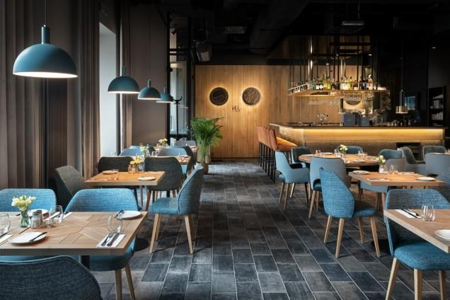
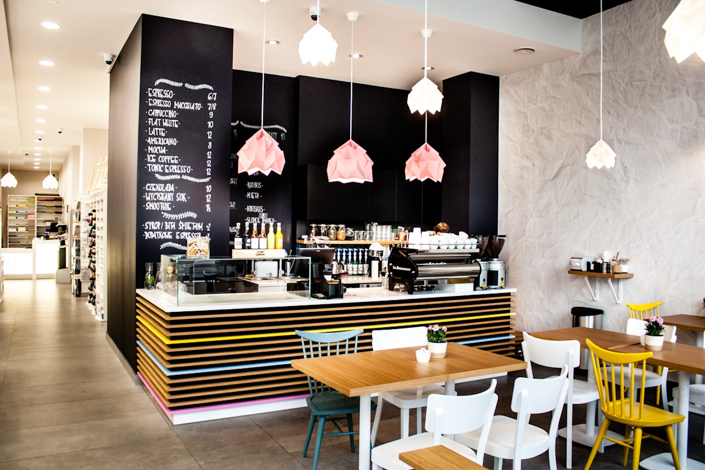
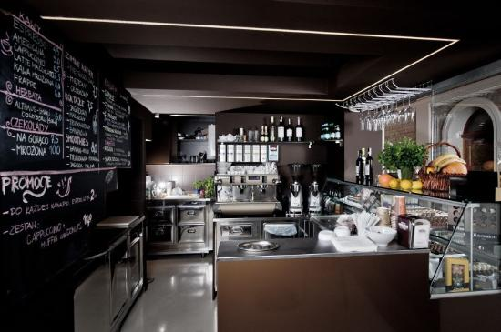
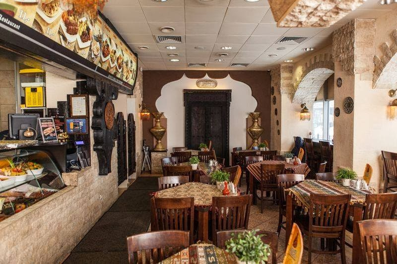
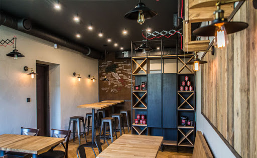

Zdjęcie Wnętrza Restauracji Mazur
Zdjęcie Wnętrza Kawiarni Sweet Taste
Zdjęcie Kawiarni Pyszne Ciasteczko
Zdjęcie Wnętrza Fast Kebab
Zdjęcie Wnętrza Pizzeri Italiano
Zdjęcia wykorzystane wyłącznie do nauki poniżej przedstawione zostały linki z miejsc które zostały wzięte wszystkie zdjecia możemy równierz wyszukać w google grafika.
link do zdjęcia wykorzystanego przy przedstawieniu fikcyjnej restauracji mazur
link do zdjęcia wykorzystanego przy przedstawieniu fikcyjnej restauracji Sweet Taste
link do zdjęcia wykorzystanego przy przedstawieniu fikcyjnej restauracji Pyszne Ciasteczko
link do zdjęcia wykorzystanego przy przedstawieniu fikcyjnej restauracji Fast Kebab
link do zdjęcia wykorzystanego przy przedstawieniu fikcyjnej restauracji Pizzeria Italiano